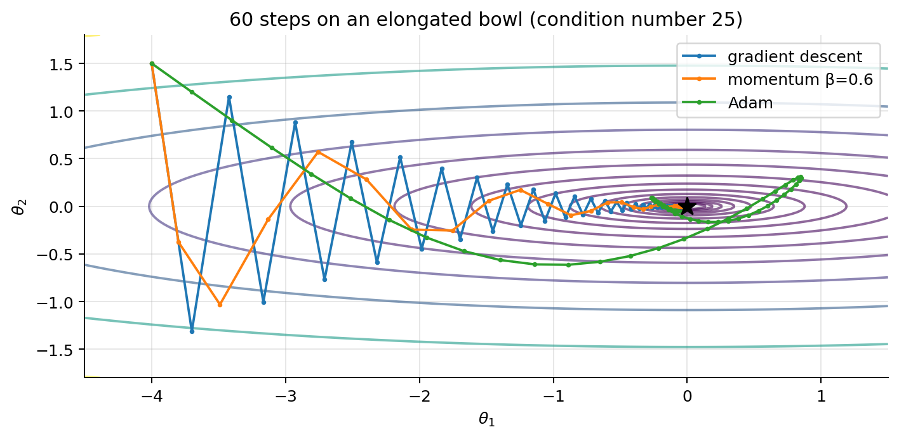

02 · Training Neural Networks: Optimisation and Regularisation
Backprop gives the gradient. This notebook covers everything else needed to train a network well: how to use the gradient (SGD, momentum, Adam, learning-rate schedules), the standard PyTorch training loop, and how to stop the network from memorising the training set (weight decay, dropout, augmentation, early stopping, normalisation).
import numpy as npimport matplotlib.pyplot as pltimport torch, torch.nn as nnplt.rcParams.update({"figure.dpi": 90, "axes.grid": True, "grid.alpha": 0.3,"axes.spines.top": False, "axes.spines.right": False})rng = np.random.default_rng(0); torch.manual_seed(0)
<torch._C.Generator at 0x727a713cee10>
1. Mini-batch stochastic gradient descent
The loss is an average over examples, \(J(\boldsymbol{\theta}) = \frac1m\sum_{i=1}^m\ell^{(i)}(\boldsymbol{\theta})\), so its gradient is an average of per-example gradients. For large \(m\) one exact gradient is expensive. Instead, at each step pick a random mini-batch\(\mathcal{B}\) of size \(B\) and use
It is an unbiased estimate. If the batch is drawn uniformly, each example appears with the same probability, so \(\mathbb{E}[\mathbf{g}] = \frac1m\sum_i\nabla\ell^{(i)} = \nabla J\). On average we move in the right direction.
Its noise shrinks with \(B\). For i.i.d. draws, \(\mathrm{Cov}(\mathbf{g}) = \frac{1}{B}\mathrm{Cov}(\nabla\ell^{(i)})\), so the standard deviation falls like \(1/\sqrt{B}\). Doubling the batch halves the variance but doubles the cost per step.
Vocabulary. One iteration = one mini-batch update. One epoch = one pass over the training set = \(\lceil m/B\rceil\) iterations (shuffle each epoch).
Batch size
Pros
Cons
\(B = m\) (full batch)
exact gradient, smooth curve
very expensive per step, doesn’t fit in memory
\(B = 1\) (pure SGD)
cheapest step
very noisy, can’t use vectorised hardware
\(B = 32\)–\(512\) (mini-batch)
GPU-efficient, noise helps escape saddles/sharp minima
the usual choice
Because of the noise, SGD with a constant \(\alpha\) does not converge to a point but hovers around a minimum. Decaying \(\alpha\) fixes this (section 4).
2. Momentum
Plain gradient descent zig-zags in long, narrow valleys (ill-conditioning, ML notes 01). Momentum keeps a running velocity:
Unrolling, \(\mathbf{v}_t = \sum_{k\le t}\beta^{t-k}\mathbf{g}_k\) is an exponentially weighted sum of past gradients. Components that keep the same sign (the valley floor direction) add up, to about \(\frac{1}{1-\beta} = 10\times\) for \(\beta = 0.9\). Components that alternate sign (across the valley) cancel. Result: faster along the valley, less zig-zag.
3. RMSProp and Adam
RMSProp divides each parameter’s step by a running root-mean-square of its gradient, so that every parameter moves at a similar rate regardless of its gradient scale: \[
\mathbf{s}\leftarrow\beta_2\mathbf{s} + (1-\beta_2)\,\mathbf{g}\odot\mathbf{g}, \qquad \boldsymbol{\theta}\leftarrow\boldsymbol{\theta} - \alpha\,\frac{\mathbf{g}}{\sqrt{\mathbf{s}} + \varepsilon}.
\]
Why the bias correction? Both averages start at 0, so early on they are biased towards 0. Unrolling with \(\mathbf{m}_0 = 0\): \(\mathbf{m}_t = (1-\beta_1)\sum_{k=1}^t\beta_1^{t-k}\mathbf{g}_k\). If the gradients have a constant mean \(\mathbb{E}[\mathbf{g}]\), then \(\mathbb{E}[\mathbf{m}_t] = (1-\beta_1)\frac{1-\beta_1^t}{1-\beta_1}\mathbb{E}[\mathbf{g}] = (1-\beta_1^t)\,\mathbb{E}[\mathbf{g}]\) (geometric series). Dividing by \(1-\beta_1^t\) removes the bias. The same argument applies to \(\mathbf{s}_t\).
Properties. The step size is roughly \(\alpha\) per parameter whatever the gradient’s scale, so Adam is robust to poor scaling and needs little tuning. It is the default for most deep-learning work (transformers in particular). SGD + momentum is still common for CNNs and sometimes generalises slightly better.
# Optimisers on an ill-conditioned quadratic J = 0.5*(a*t1^2 + b*t2^2)a_, b_ =1.0, 25.0grad =lambda t: np.array([a_ * t[0], b_ * t[1]])def run(step_fn, T=60): t, state, path = np.array([-4.0, 1.5]), {}, []for k inrange(1, T +1): path.append(t.copy()); t = step_fn(t, grad(t), state, k)return np.array(path)def gd(t, g, s, k, lr=0.075): return t - lr * gdef momentum(t, g, s, k, lr=0.05, beta=0.6): s["v"] = beta * s.get("v", 0) + g;return t - lr * s["v"]def adam(t, g, s, k, lr=0.3, b1=0.9, b2=0.999, eps=1e-8): s["m"] = b1 * s.get("m", 0) + (1- b1) * g; s["s"] = b2 * s.get("s", 0) + (1- b2) * g * g mh, sh = s["m"] / (1- b1 ** k), s["s"] / (1- b2 ** k);return t - lr * mh / (np.sqrt(sh) + eps)T1, T2 = np.meshgrid(np.linspace(-4.5, 1.5, 200), np.linspace(-1.8, 1.8, 200))plt.figure(figsize=(8, 4))plt.contour(T1, T2, 0.5* (a_ * T1 **2+ b_ * T2 **2), levels=np.logspace(-2, 1.7, 15), cmap="viridis", alpha=0.6)for fn, name in [(gd, "gradient descent"), (momentum, "momentum β=0.6"), (adam, "Adam")]: p = run(fn); plt.plot(p[:, 0], p[:, 1], ".-", ms=4, label=name)plt.plot(0, 0, "k*", ms=12); plt.legend(); plt.xlabel(r"$\theta_1$"); plt.ylabel(r"$\theta_2$")plt.title("60 steps on an elongated bowl (condition number 25)"); plt.tight_layout(); plt.show()

Gradient descent zig-zags across the narrow direction and crawls along the long one. Momentum damps the zig-zag and reaches the minimum. Too much momentum (e.g. β = 0.9 on this small problem) overshoots and spirals, so α and β are tuned together. Adam rescales both directions to a similar step size, so it moves diagonally without zig-zagging; its momentum makes it overshoot a little before settling.
4. Learning-rate schedules
The learning rate is the most important hyperparameter. Too high → loss diverges or oscillates; too low → slow, may stall on plateaus. Common practice is to start high and decay:
Warm-up: increase linearly from ~0 for the first few hundred steps (important for Adam and transformers, whose early second-moment estimates are poor).
ReduceLROnPlateau: halve \(\alpha\) when the validation loss stops improving (used in the face labs).
In PyTorch: torch.optim.lr_scheduler.*, called with scheduler.step() once per epoch (or per step).
5. The PyTorch training loop
Running example: the scikit-learn digits dataset (1,797 greyscale 8×8 images, 10 classes). It is small enough to train in seconds on a CPU. We deliberately train on only 500 images so that overfitting is visible.
train 500, validation 648, test 649; input dim 64, 10 classes
def make_mlp(p_drop=0.0):return nn.Sequential(nn.Linear(64, 256), nn.ReLU(), nn.Dropout(p_drop), nn.Linear(256, 256), nn.ReLU(), nn.Dropout(p_drop), nn.Linear(256, 10)) # logits: CrossEntropyLoss applies log-softmaxdef evaluate(model, loader, loss_fn): model.eval() # dropout off, batch-norm uses running statistics total_loss, correct, n =0.0, 0, 0with torch.no_grad(): # no graph: faster, less memoryfor xb, yb in loader: out = model(xb) total_loss += loss_fn(out, yb).item() *len(yb) # weight by batch size correct += (out.argmax(1) == yb).sum().item(); n +=len(yb)return total_loss / n, correct / ndef train(model, optimizer, epochs=150, patience=None): loss_fn = nn.CrossEntropyLoss() hist = {"train_loss": [], "val_loss": [], "val_acc": []} best, best_state, wait = np.inf, None, 0for epoch inrange(epochs): model.train() # dropout on run_loss, n =0.0, 0for xb, yb in train_loader: optimizer.zero_grad() # 1. reset accumulated gradients loss = loss_fn(model(xb), yb) # 2. forward pass + loss loss.backward() # 3. backprop optimizer.step() # 4. parameter update run_loss += loss.item() *len(yb); n +=len(yb) vl, va = evaluate(model, val_loader, loss_fn) hist["train_loss"].append(run_loss / n); hist["val_loss"].append(vl); hist["val_acc"].append(va)if vl < best: # keep the best weights (checkpoint) best, wait = vl, 0; best_state = {k: v.clone() for k, v in model.state_dict().items()}else: wait +=1if patience isnotNoneand wait >= patience:break# early stoppingreturn hist, best_statetorch.manual_seed(0)model = make_mlp()hist_plain, _ = train(model, torch.optim.Adam(model.parameters(), lr=1e-3))print(f"final: train loss {hist_plain['train_loss'][-1]:.4f}, val loss {hist_plain['val_loss'][-1]:.3f}, val acc {hist_plain['val_acc'][-1]:.3f}")
final: train loss 0.0003, val loss 0.221, val acc 0.957
The five lines that every loop has: zero_grad() → forward → loss → backward() → step(). Plus the two modes: model.train() for training and model.eval() + torch.no_grad() for evaluation. Frameworks like PyTorch Lightning (face lab) write this loop, the device handling, checkpointing and early stopping for you, but it is the same loop.
Averaging metrics over an epoch. Weight each batch by its size (the last batch is usually smaller). For non-linear metrics, don’t average per-batch values: \(\frac1B\sum_b\sqrt{\mathrm{MSE}_b} \le \sqrt{\frac1B\sum_b\mathrm{MSE}_b}\) by Jensen’s inequality (\(\sqrt{\cdot}\) is concave), so the average of per-batch RMSEs underestimates the true RMSE. Accumulate sums and take the root at the end.
6. Reading learning curves
Pattern
Diagnosis
What to do
train and val loss both high, close together
underfitting (high bias)
bigger model, train longer, higher LR, better features
train loss ↓ to ~0, val loss ↓ then ↑
overfitting (high variance)
regularise (below), more data/augmentation, early stopping
loss explodes / NaN
LR too high, exploding gradients
lower LR, gradient clipping, check data
loss flat from the start
LR too low, dead units, bug
LR range test, check init / gradients
fig, axes = plt.subplots(1, 2, figsize=(12, 3.8))axes[0].plot(hist_plain["train_loss"], label="train"); axes[0].plot(hist_plain["val_loss"], label="validation")best_ep =int(np.argmin(hist_plain["val_loss"]))axes[0].axvline(best_ep, color="gray", ls=":", label=f"best val loss (epoch {best_ep})")axes[0].set_yscale("log"); axes[0].set_xlabel("epoch"); axes[0].set_ylabel("cross-entropy"); axes[0].legend()axes[0].set_title("No regularisation: validation loss turns up = overfitting")axes[1].plot(hist_plain["val_acc"]); axes[1].set_xlabel("epoch"); axes[1].set_title("validation accuracy")plt.tight_layout(); plt.show()
7. Regularisation
7.1 Weight decay (L2)
Add \(\frac{\lambda}{2}\lVert\mathbf{W}\rVert^2\) to the loss (ML notes 03; biases usually excluded). Its gradient adds \(\lambda\mathbf{W}\), so the SGD step becomes
shrink every weight by a constant factor, then take the data step. That is why L2 is called weight decay. With Adam the two are not equivalent: the \(\lambda\mathbf{W}\) term would be divided by \(\sqrt{\hat{\mathbf{s}}}\) like the rest of the gradient, so weights with large gradients get less decay. AdamW applies the decay directly, \(\mathbf{W}\leftarrow\mathbf{W} - \alpha\lambda\mathbf{W}\), outside the adaptive step. Use torch.optim.AdamW(..., weight_decay=λ).
7.2 Dropout
During training, each activation is independently set to 0 with probability \(p\) and the survivors are scaled by \(\frac{1}{1-p}\) (inverted dropout): \[
\tilde{a}_j = \frac{r_j}{1-p}\,a_j, \qquad r_j\sim\mathrm{Bernoulli}(1-p).
\]Expectation is preserved:\(\mathbb{E}[\tilde a_j] = \frac{(1-p)}{1-p}a_j = a_j\). So at test time dropout is simply switched off (model.eval()) and no rescaling is needed.
Why it helps: a unit cannot rely on any particular other unit being present, so the network learns redundant, more robust features. It can also be seen as training an exponentially large ensemble of thinned sub-networks that share weights and averaging them at test time (compare bagging, ML notes 07). Typical \(p\): 0.1–0.5.
7.3 Data augmentation
Apply random, label-preserving transformations to the training inputs each epoch (images: flips, crops, small rotations, colour jitter; audio: noise, time shift; text: harder). The model rarely sees the exact same input twice, which is like having more data. It also builds the desired invariances into the model. Only use transformations that don’t change the label: a horizontal flip is fine for clothes, not for digits (a mirrored “2” is not a “2”).
7.4 Early stopping
Monitor the validation loss, keep the best checkpoint, and stop after patience epochs without improvement. Training time acts as a regulariser: for a quadratic loss and small initial weights, early-stopped gradient descent behaves much like L2 regularisation.
no regularisation: test loss 0.153 test accuracy 0.972
weight decay: test loss 0.136 test accuracy 0.971
dropout: test loss 0.118 test accuracy 0.974
early stopping (best ckpt): test loss 0.116 test accuracy 0.969
With only 500 training images, all three regularisers stop the validation loss from climbing, and they improve the test loss, but the test accuracy barely moves. The unregularised model mostly becomes over-confident rather than wrong: its argmax is still right, but its probabilities are too extreme. That is the same lesson as boosting in ML notes 07. On harder problems, or with less data, regularisation changes the accuracy as well.
8. Normalisation layers
Batch normalisation (Ioffe & Szegedy, 2015) standardises each unit’s pre-activation over the mini-batch, then lets the network rescale it: \[
\hat{z}_j = \frac{z_j - \mu_{\mathcal{B},j}}{\sqrt{\sigma^2_{\mathcal{B},j} + \varepsilon}}, \qquad \text{output} = \gamma_j\hat{z}_j + \beta_j
\] with learnable \(\gamma_j, \beta_j\). It keeps activations at a stable scale throughout training (the problem of section 6 in notebook 01), allowing higher learning rates and faster training, with a mild regularising effect (batch noise). Train vs. eval: in training it uses the batch statistics; at test time it uses running averages collected during training. This is another reason model.eval() matters.
Layer normalisation normalises over the features of each example instead of over the batch. It doesn’t depend on the batch size and behaves the same in training and inference, which is why it is used in RNNs and transformers (notebook 05).
9. Gradient clipping and other practicalities
Gradient clipping: if \(\lVert\mathbf{g}\rVert > c\), rescale \(\mathbf{g}\leftarrow c\,\mathbf{g}/\lVert\mathbf{g}\rVert\) (torch.nn.utils.clip_grad_norm_(model.parameters(), c), between backward() and step()). It prevents a single huge gradient (RNNs, fine-tuning) from wrecking the weights.
Normalise the inputs (standardise features, or scale pixels to [0,1] / ImageNet statistics for pre-trained models). Same reason as for linear models: conditioning.
Overfit a tiny batch first. A correct model and training loop must reach ~0 loss on 10 examples. If it can’t, there is a bug.
Seeds (torch.manual_seed) for reproducibility; GPU operations may still be slightly non-deterministic.
Mixed precision (float16/bfloat16) roughly halves memory and speeds up training on modern GPUs.
Summary
Mini-batch SGD uses an unbiased, noisy gradient estimate (variance \(\propto 1/B\)); an epoch is one pass over the data.
Momentum averages gradients to damp zig-zags; Adam adds per-parameter scaling and bias correction and is the common default. Decay the learning rate (step, cosine, plateau), with warm-up for transformers.
Training loop: zero_grad → forward → loss → backward → step; evaluate in eval() mode under no_grad(), weighting metrics by batch size.
Diagnose with learning curves; fight overfitting with weight decay (AdamW), dropout (inverted, expectation-preserving), augmentation and early stopping with the best checkpoint.
BatchNorm/LayerNorm stabilise activations; clip gradients when they can explode.